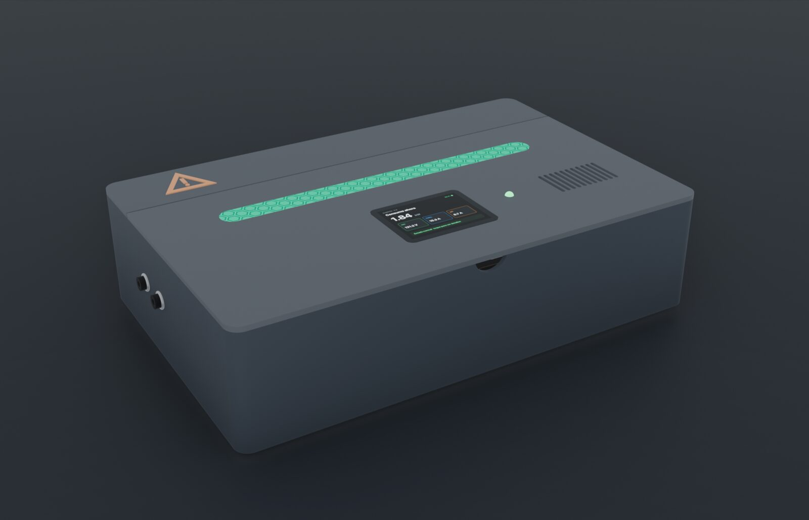

¿Cuánta energía está gastando ahora mismo?
Medidor de energía no invasivo de dos canales con ESP32. Mide tu tablero y tu aire acondicionado, segundo a segundo.

Tu factura llega 30 días tarde y no dice qué equipo gastó.
En los edificios comerciales del Caribe, el aire acondicionado representa cerca de la mitad del consumo. Sin medición por circuito, no se puede saber cuánto ahorra un cambio.
Sin cortar un solo cable.
- IPinzas SCT-013 de núcleo partido abrazan el conductor: la corriente crea un campo magnético que la pinza convierte en una señal pequeña.
- VZMPT101B reduce los 120 V con un transformador aislado. La red queda en un compartimento separado.
- 2Dos canales: CH1 mide todo el tablero, CH2 un subcircuito como el del aire acondicionado.
Del cable a tu celular en un segundo.
El ESP32 toma 8.000 muestras por segundo de cada señal, calcula sobre 60 ciclos completos de la red y envía un registro por Wi-Fi. Si se cae la red guarda hasta 20 minutos.
Multiplicar, sumar, promediar.
Cada muestra de tensión se multiplica por la de corriente. El promedio de esos productos es la potencia activa, la que realmente pagas.
Tarjetas modulares, red aislada.
Cinco tarjetas de baja tensión: potencia, corriente, tensión, control e interfaz. Los 120 V quedan en un compartimento propio con guarda opaca.
En la tapa, una pantalla táctil recibe los datos del ESP32 por ESP-NOW.

Lee el día de ayer y lleva una libreta.
La red LSTM recorre las últimas 24 horas, una por una: consumo, hora, día y temperatura. Mientras lee, tres puertas deciden qué guardar en su memoria.
- 🧽Olvido: borra lo que ya no sirve.
- ✏️Entrada: anota lo nuevo e importante.
- 📣Salida: usa lo anotado para predecir.
Predice el consumo de las próximas horas.
Una red neuronal LSTM de 5.281 parámetros aprende el ciclo diario y la temperatura. Entrenada con datos públicos de una vivienda (UCI) mientras reunimos registros propios.
Los comerciales son cajas cerradas.
| Solución | Canales | Acceso a la forma de onda | Método de cálculo |
|---|---|---|---|
| Shelly EM | 2 | No | Cerrado |
| Emporia Vue | hasta 18 | No | Cerrado, nube propia |
| PZEM-004T | 1 | No | Valores ya calculados |
| Este proyecto | 2 + tensión | Sí · 8.000 muestras/s | Abierto, hecho por el grupo |
Lo que más nos preguntan.
Mide 2 circuitos: el total de la casa y uno que elijas, como el aire. Reconocer cada aparato por su “huella” eléctrica es el siguiente paso: el medidor ya guarda la forma de onda que se necesita.
No. Las pinzas abrazan el cable. Pero abrir el tablero es trabajo de un electricista.
Sigue midiendo, lo muestra en su pantalla y guarda 20 minutos de registros para enviarlos después.
La meta es ±3 % en potencia. Probado con señales simuladas; la prueba con carga real está en curso.
Escanea y mira todo por dentro.
Esquemáticos, cálculos, modelos 3D, firmware, plataforma web y el modelo de pronóstico. Todo el código es abierto.
Ingeniería Electrónica · CUC · 2026-2. Estado: diseño, firmware y plataforma probados con señales simuladas; montaje y validación eléctrica en curso.
 Apunta tu cámara aquí
Apunta tu cámara aquí